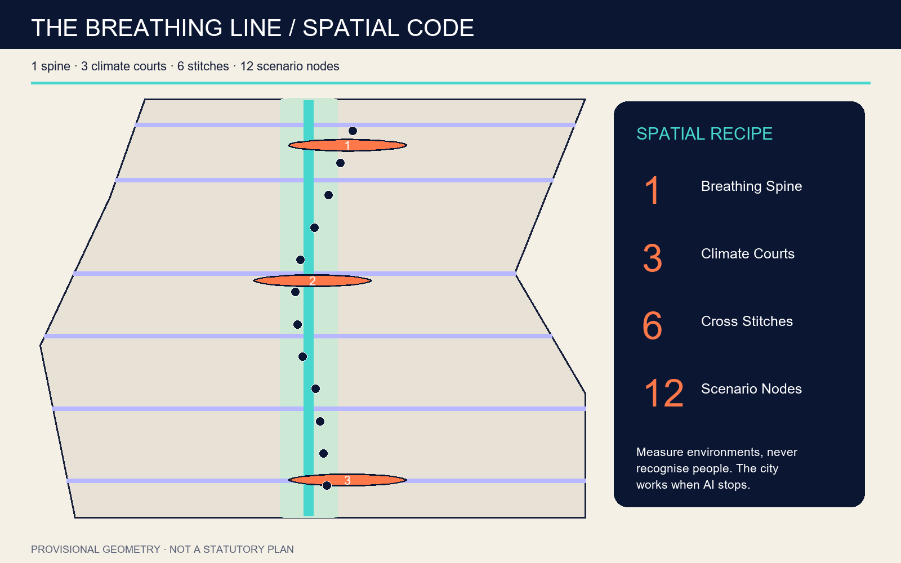
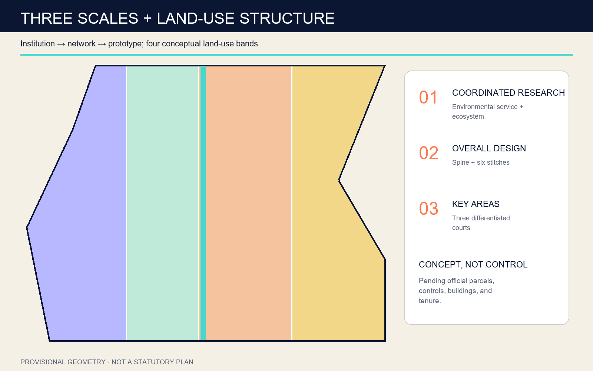
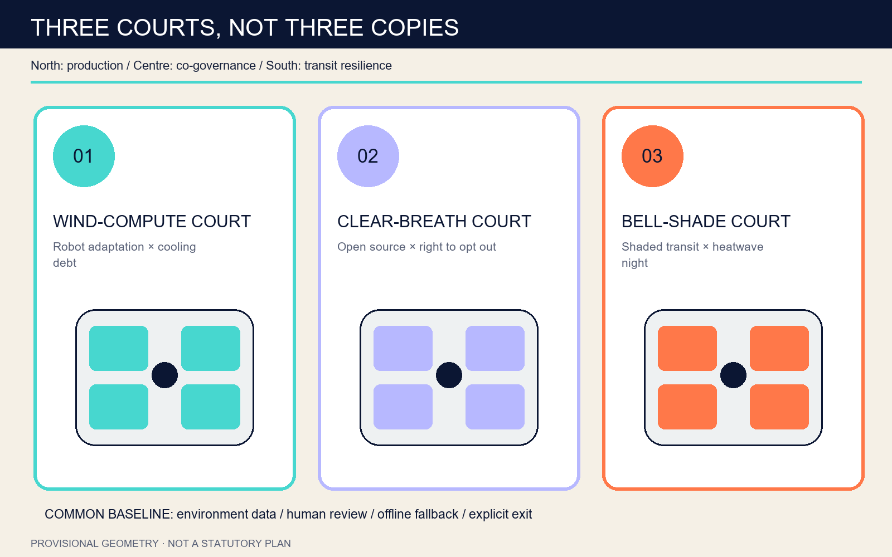
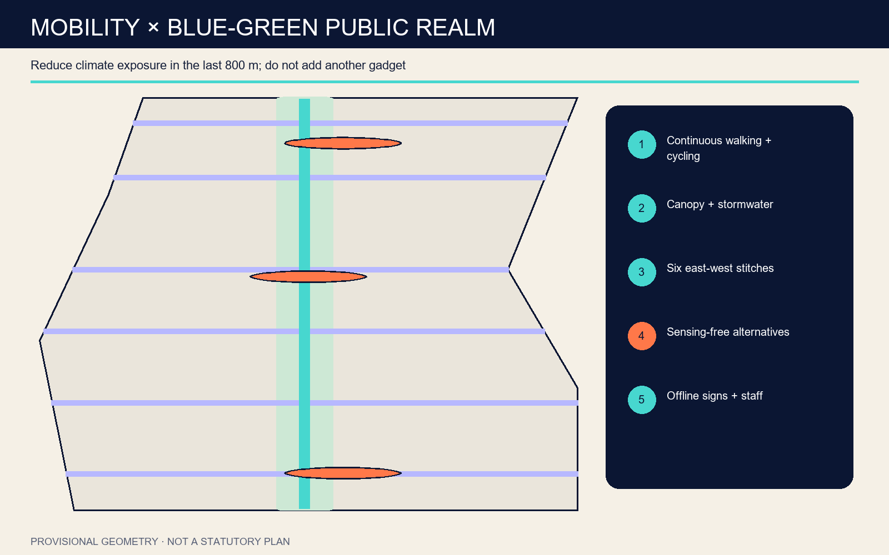
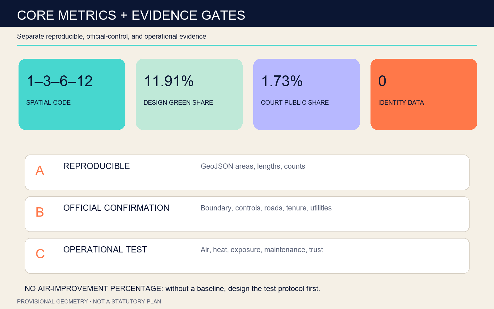

PRECISION WARNING — All areas and ratios use a provisional boundary and are not approval controls.
Overview · Three Scales · Key Areas · Land Use · Mobility · Blue-Green · Buildings · Projects · AI Scenarios · Metrics · Compliance · Self-Check · Sources · Assumptions
REPRODUCIBLE11.413 km²
Provisional overall envelope
REPRODUCIBLE11.91%
Design green-corridor share
REPRODUCIBLE1.73%
Three-court public-space share
REPRODUCIBLE12 / 4
Scenario nodes / industry tests





AI SCENARIO GOVERNANCE
| Allowed | Prohibited | Fallback |
|---|---|---|
| Edge-aggregated heat, humidity, wind, particles, noise and facility state | Faces, device identifiers, Wi-Fi probes, individual traces | Mechanical signs, human review, equivalent sensing-free route |
SELF-CHECK STATUS
Structured outputs are generated; repository self_check.json and CI remain authoritative.